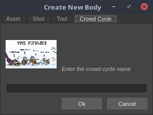
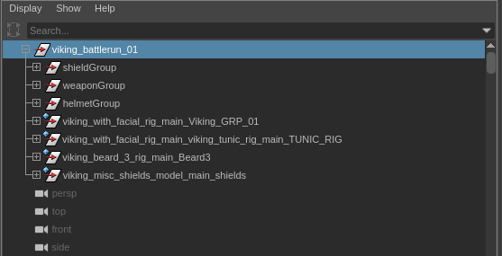
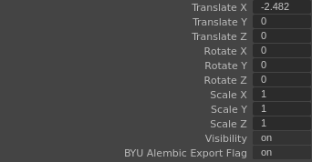
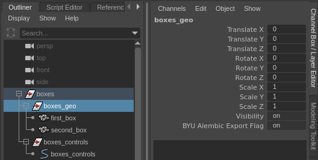
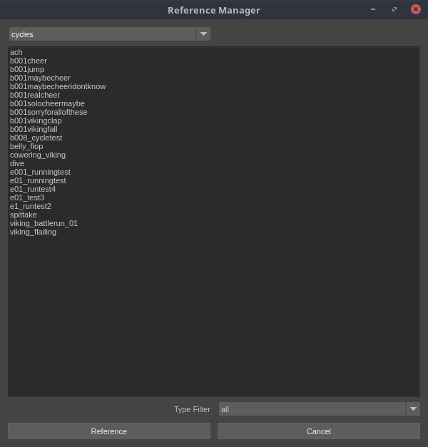

How to Make a Crowd
How to Setup Crowds Cycle Assets in Maya
While making a crowd cycle asset is similar to making a model, rig, or animation, there are a couple of important differences for crowds, so please take a look all the way through these instuctions.
Create Body
First you need to create the crowd cycle asset in the pipeline.
- Click the plus sign to bring up the asset create window.
- Make sure you click on the "Crowd Cycle" tab.
- Name your cycle. Keep in mind that your cycle may be used in more than one shot, so you may want to avoid using the shot name as a prefix unless that cycle is only ever going to be in that shot. Be descriptive but concise.
Checkout
Click the checkout button and then in the checkout window select your newly created cycle. Click checkout.
Reference a Model or Rig
Bring in assets like the viking facial rig, helmet, sword, etc. just like you would do for any scene.
For the crowds we need to be able to easily switch out weaons, helmets, sheilds, etc. so that we can add varition. This will be done automatically in Houdini.
There are certain accessories that will help with the randomization:
- Shield: use viking_misc_shields please please please it has to be that one.
- Beard: Don't add a beard; we'll take care of that in Houdini. Also keep in mind that for animation the beard will only follow the mouth movement. There will not be any additional animation for it.
- Weapon:
- For one handed weapons it might be easier to use the viking_weapon_sword01 because it doesn't have several versions inside of it like the viking_misc_swords. However you should be able to use whichever weapon you want.
- For two handed weapons you should problaby use the viking_misc_spears because I think its the only two handed weapon we have.
- Helmet: use whatever helmet you want.
Grouping
All of the referenced models in your cycle will need to be put a single group in order to be exported correctly. Name the group the same name as the cycle.
 Tag Selected Objects for Export
Tag Selected Objects for Export
Please make sure that all of the geo that you want to be exported is tagged. To see if it is tagged select the group/geo in the outliner and look in the channels for the selected item. It should have a channel called "BYU Alembic Export Flag." It it doesn't have the tag go ahead and add it by clicking the tag tool in the shelf.
Note: The tag is based on if the channel is there or not and not if the tag is set to on or off. If you need to remove a tag there is an untagg tool.
Note: Please don't tag rigs or controls. Only the geometry should be tagged.
Note: If a group is tagged then everything in the group will be exported. In the example below since the boxes_geo group is tagged both first_box and second_box will be exported. If the entire boxes groups was tagged then the boxes_controls group would also be exported and that is not good.
Animation
The animation should be able to be played in a loop, but remember that you need to make sure that the last frame isn't the same as the first frame or else that pose will get two frames worth of time. The last frame needs to lead into the first frame.
To facilitate adding beards we need to have one frame with the viking in the A pose. So in addition to your animation cycle please provide keyframes for an A pose on frame 0.
It's also important that the cycle is animated in place on the origin.
Publish
After you have everything in place you are ready to publish. Publishing will also take care of exporting the cycle to an alembic which you will reference into you scene during the next phase.
Using a Cycle in Your Animation
Now that your cycle is created you can bring it into your shot. You will open your shot reference in how ever many copies of your cycle you need, draw out the same number of paths, make the vikings follow that path, and publish your shot.
Reference the Cycle
You can find your cycle by selecting the cycle option from the menu in the reference window.
Animating with the Cycle
Now that the reference is in you can start animating with it. When it references in the cycle alembic it will parent it to the controls that are highlighted in the image bellow.
For the animation you will make a path and then just have the viking follow that path. Thats it! They need to be moving a long a path inorder for it to go into our crowd tool in Houdini.
Tagging
When you reference a cycle it is automatically tagged. You don't have to worry about it.
Publishing
When you publish your shot you will be prompted to export the crowd animation. Every time that you make changes to how the crowd cycle references are animated you will need to export the crowd animation. Otherwise you can dismiss that window.
Conclusion
That's it! Now that you have finished animating your crowd you can hand it off to the the fx team who can take care of taking it into Houdini.